Болты
48 типов изделий в категории.
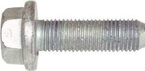
ART 10105 Болт с фланцем

ART 88912 болт с фланцем с насечками
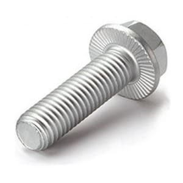
ART 88913 болт шестигранный с фланцем
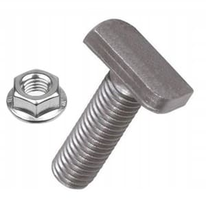
ART 88928 болт с T-образной головкой для профиля
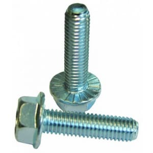
ART 88933 болт со стопорным буртом

ART 88940 болт Halfen для профиля
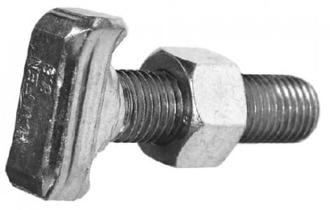
ART 88950 болт Halfen для профиля
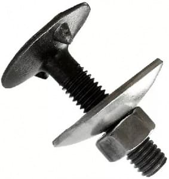
DIN 15237 болт норийный

DIN 186 Болт с Т-образной головкой
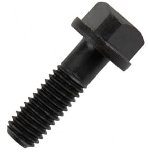
DIN 22424 болт с трехгранной головкой и буртиком

DIN 261 болт с T-образной головкой для пазов

DIN 444 болт откидной

DIN 529 Болты анкерные
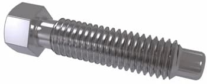
DIN 561 Болт установочный с уменьшенной головкой и цапфой
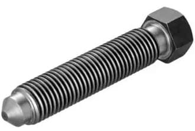
DIN 564 болт установочный с коническим концом

DIN 580 рым-болт

DIN 601 болт с гайкой

DIN 603 болт мебельный с полукруглой головкой

DIN 604 болт с потайной головкой и усом
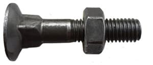
DIN 605 Болт с потайной головкой и квадратным подголовком
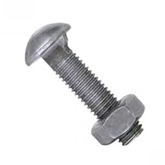
DIN 607 Болт мебельный с усом
DIN 607 и ГОСТ 7801

DIN 608 Болт лемешный с потайной головкой

DIN 609 болт призонный
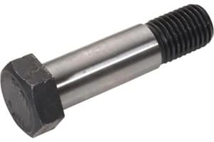
DIN 610 болт призонный
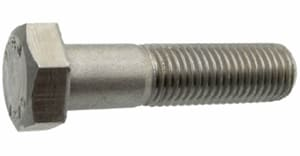
DIN 6914 болт высокопрочный
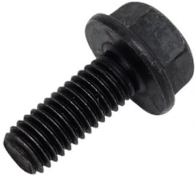
DIN 6921 Болт с фланцем и насечкой

DIN 7968 болт призонный с гайкой

DIN 7990 болт для стальных конструкций

DIN 931 болт шестигранный с неполной резьбой
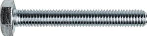
DIN 933 Болт шестигранный с полной резьбой

DIN 960 Болт с мелкой неполной резьбой

DIN 961 болт с мелкой полной резьбой

DIN 962 болты с отверстием

EN 14399-8 болт высокопрочный
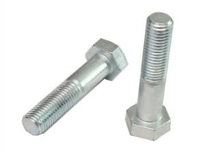
ISO 4014 болт с шестигранной головкой

ISO 4017 болт с шестигранной головкой
Болты DIN 608 и ГОСТ 7786
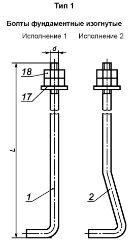
ГОСТ 24379.1-2012 Болты фундаментные
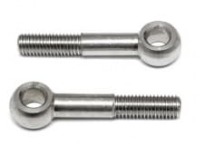
ГОСТ 3033-79 болты откидные

ГОСТ 7786-81 Болт лемешный
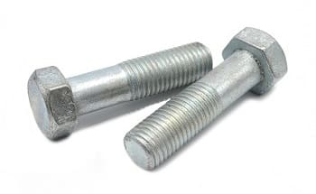
ГОСТ 7796-70 болт с шестигранной уменьшенной головкой

ГОСТ 7798-70 Болт с шестигранной головкой

ГОСТ 7805-70 Болт с шестигранной головкой
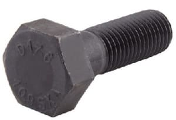
ГОСТ Р 52644-2006 болт высокопрочный
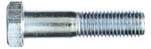
ГОСТ Р ИСО 4014-2013 болт с шестигранной головкой
Отличия болтов DIN 931 и DIN 933